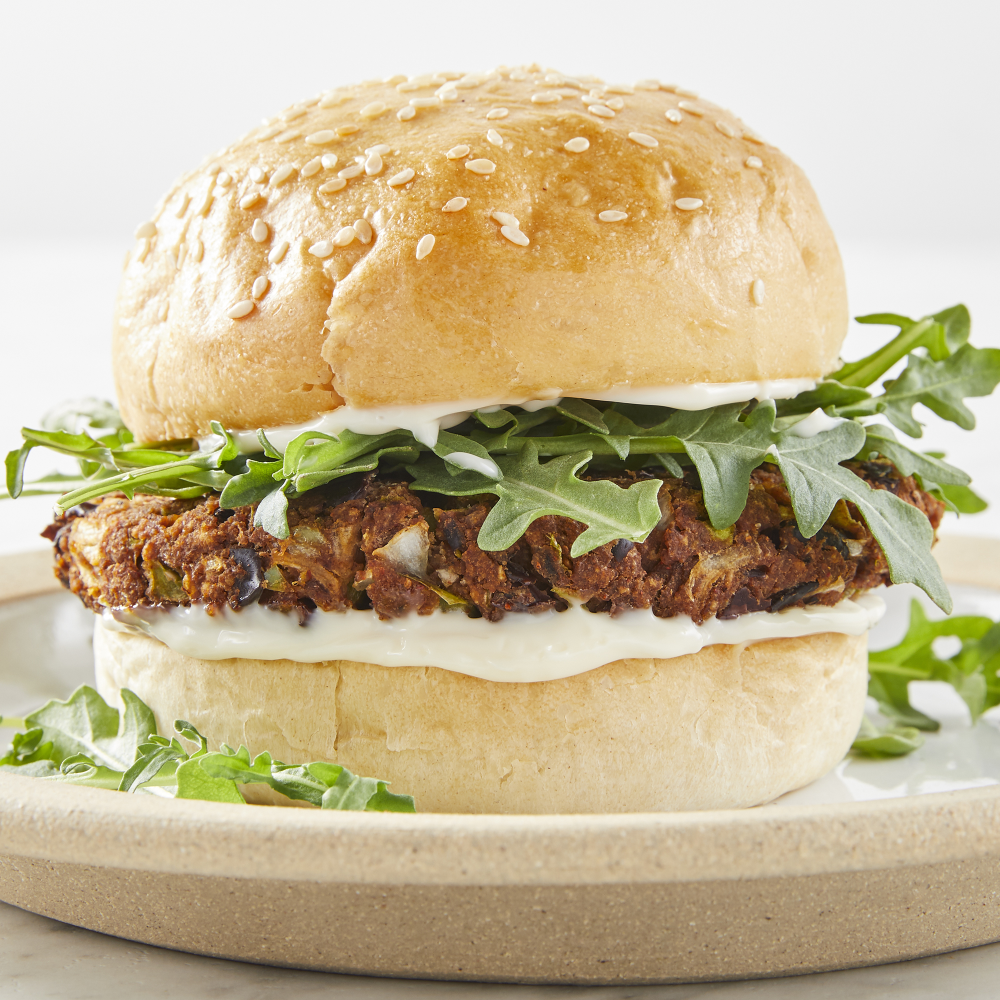

Homemade Black Bean Veggie Burgers

How to make delicious homemade black bean burgers
With this black bean burger recipe, you will never want
to eat frozen veggie burgers again. These are so easy,
and you'll be proud to have created such a vegetarian delight.
Ingredients
- cooking spray
- 1 (16 ounce) can black beans, drained and rinsed
- 1/2 green bell pepper, cut into 2 inch pieces
- 1/2 onion, cut into wedges
- 3 cloves garlic, peeled
- 1 egg
- 1 tablespoon chili powder
- 1 teaspoon cumin
- 1 teaspoon Thai chili or hot sauce
- 1/2 cup bread crumbs
Steps
- Preheat an outdoor grill for high heat. Lightly oil a sheet
of aluminum foil with cooking spray.
- Mash black beans in a medium bowl with a fork until thick and pasty.
- Finely chop bell pepper, onion, and garlic in a food processor.
Stir chopped vegetables into mashed beans.
- Stir together egg, chili powder, cumin, and chili sauce in a small
bowl. Add to the mashed beans and stir to combine. Mix in bread crumbs
until the mixture is sticky and holds together. Divide the mixture
into four patties and place on the prepared foil.
- Grill on the preheated grill for about 8 minutes on each side.